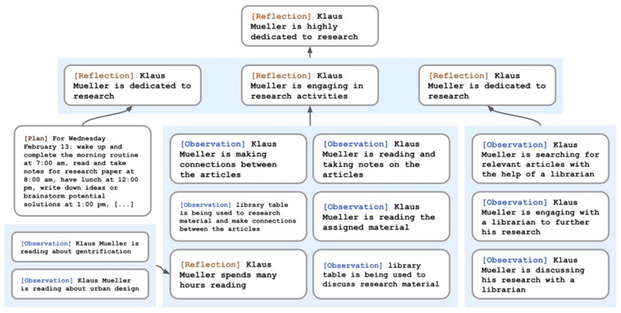
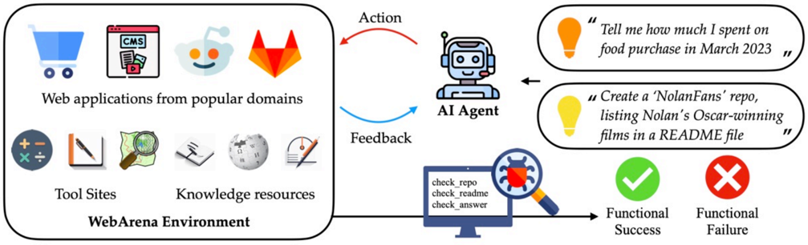
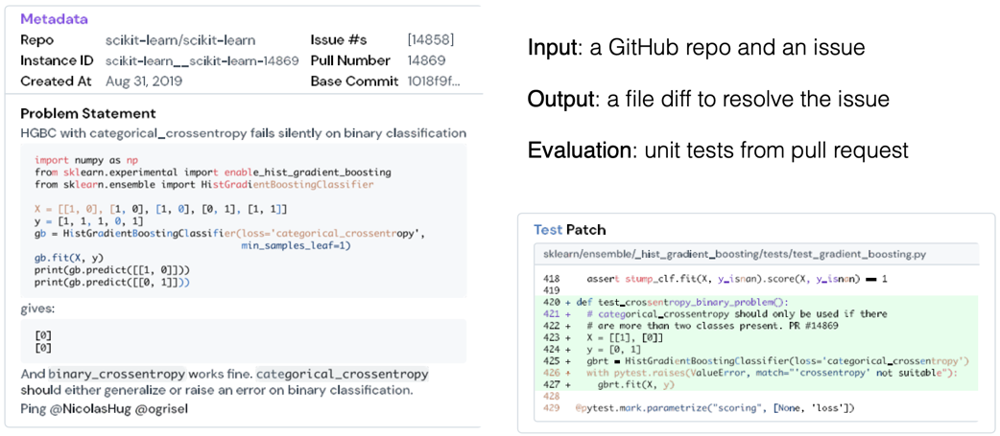
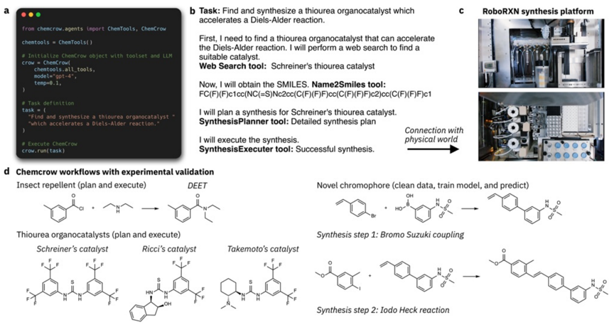

Advanced machine learning
LLM agents
Alex Avdiushenko
May 14, 2025
Lecture Plan
- What is LLM agents?
- A brief history of LLM agents
- In the recent context of “LLM”
- In the ancient context of “agents”
- On the future of LLM agents
What is "agent"?
-
An "intelligent" system that interacts with some "environment"
- Physical environments: robot, autonomous car, ...
- Digital environments: DQN for Atari, Siri, AlphaGo, ...
- Humans as environments: chatbot
- Define "agent" by defining "intelligent" and "environment"
- It changes over time!
- Exercise question: how would you define "intelligent"?
What is "LLM agent"?

- Level 1: Text agent
- Uses text action and observation
- Examples: ELIZA, LSTM-DQN
- Level 2: LLM agent
- Uses LLM to act
- Examples: SayCan, Language Planner
- Level 3: Reasoning agent
- Uses LLM to reason to act
- Examples: ReAct, AutoGPT
- The key focus of the field and the talk
A brief history of LLM agents
- Reasoning
- CoT (Chain of Thought)
- Zero-shot CoT
- Self-consistency
- ...
- Acting (Grounding, tool use, etc.)
- Game
- Robotics
- RAG (Retrieval-Augmented Generation)
- ...
- $\to$ LLM agent (but not reasoning agent) evolves into ReAct (Reasoning + Acting)
- New apps/tasks/benchmarks:
- Web browsing
- Software engineering
- Scientific discovery
- ...
- New methods:
- Memory, learning, planning, multi-agent...

Reasoning OR Acting
CoT
Reasoning Traces $\rightleftarrows$ LM
- Flexible and general to augment test-time compute
- Lack of external knowledge and tools
RAG/Retrieval/Code/Tool use
Actions $\rightleftarrows$ LM $\rightleftarrows$ Env
- Retrieval
- Search engine
- Calculator
- Weather API
- Python
- ...
- Lack of reasoning
- Flexible and general to augment knowledge, computation, feedback, etc.

Source: LLM Agents MOOC, Fall 2024
Let's watch the video
Source: LLM Agents MOOC, Fall 2024
ReAct is general and effective
| (NLP tasks) | (RL tasks) | ||
|---|---|---|---|
| PaLM-540B | HotpotQA (QA) |
FEVER (fact check) |
ALFWorld (Text game) |
| Reason | 29.4 | 56.3 | N/A |
| Act | 25.7 | 58.9 | 45 |
| ReAct | 35.1 | 64.6 | 71 |
Let's talk about..
So we need a long-term memory
- Read and write
- Stores experience, knowledge, skills, ...
- Persists over new experience
Code-based controller
Instruction: ...
Thought: ...
Action: ...
Observation: ...
Thought: ...
...
Programming Task Reflection
- Task: Given two strings of parentheses, determine if they are balanced
- Trajectory:
def match_parens(lst): ... - Evaluation:
- Internal or external evaluation: Self-generated unit tests fail: the function only checks if the counts of parentheses are equal but ignores their order
- Reflection: The function is wrong because it only counts the parentheses, but the order matters for valid balancing

- $\to$ Next Trajectory
Source: LLM Agents MOOC, Fall 2024
Semantic memory of (reflective) knowledge
Cognitive Architectures for Language Agents (CoALA)
- Memory
- Action space
- Decision making
Exercise Questions
- What distinguishes external environment VS internal memory?
- What distinguishes long VS short term memory?
Observation $\to$ (what "language"?) $\to$ Action
Symbolic AI Agent: 1960 - 1990
sp {blocks-world*opsub*proposal*clear}
(state <s> ^name blocks-world ^desired <d*1> ^clear <dobject>
<ontop2>)
^bottom-block <object>
(Deep) RL Agent: 1990 - 2020
[-0.3432, 2.444, 0.34342, ...
0.4545, 0.443, 3.34234]
LLM Agent: 2020 - now
Let’s think step by step…
The room is dark, so I need a
lamp, the lamp is in
bedroom, so I should ...
Symbolic state or neural embedding
- Intensive efforts to design or train
- Task-specific, hard to generalize
Open-ended natural language
- Rich priors from LLMs
- Inference-time scalable
- General and generalizable
How to evaluate LLM agents?
WebShop (2022)
- Large-scale complex environment based on 1.16M Amazon products
- Automatic reward based on instruction and product attribute matching
- Challenges language and visual understanding, and decision-making
Web Arena (2023)
SWE-Bench (2023)
ChemCrow: ReAct enables discovery of a novel chromophore
What's Next?
Training
FireAct: Toward Language Agent Fine-tuning
Interface
SWE-agent: Agent-Computer Interfaces Enable Automated Software Engineering
Robustness
Human
$\tau$-bench: A Benchmark for Tool-Agent-User Interaction in Real-World Domains
Benchmark
FireAct: Training LLM for agents
Establish model-agent synergy:
- Improve "agent capabilities" like planning, self-evaluation, calibration
- Open-source agent backbone model
- Next trillion tokens for model training
SWE-agent: Agent-Computer Interfaces Enable Automated Software Engineering
LLMs and Humans are Different, So Should Their Interfaces
- e.g., humans have smaller short-term memory, so they have to trade off time for space
ACI Design Can Help Us
- Better solve tasks (without changing the agent)
- Better understand agents (vs. humans)
Human in the loop needs robustness
- You need to solve Riemann hypothesis once (one time out of millions)
- But you always need to buy tickets correctly
Summary
-
LLM Agents Overview
- LLM agents are goal-oriented systems using language models for reasoning and acting
- ReAct combines reasoning and action, improving performance across multiple tasks
- Challenges: Tool integration and improving autonomous planning
-
CoT vs RAG
- Chain of Thought (CoT) focuses on internal reasoning traces, lacking external tools
- RAG augments LLMs by connecting them with external knowledge, feedback, and computation tools
-
Reflection & Long-term Memory
- Reflection and self-evaluation improve task-solving abilities over iterations
- LLM agents need long-term memory to store and update experience persistently
-
Future of LLM Agents
- Training improvements via models like FireAct
- Interfaces tailored for human-agent collaboration (SWE-agent)
- Robustness and evaluation benchmarks such as TAU-bench and WebShop